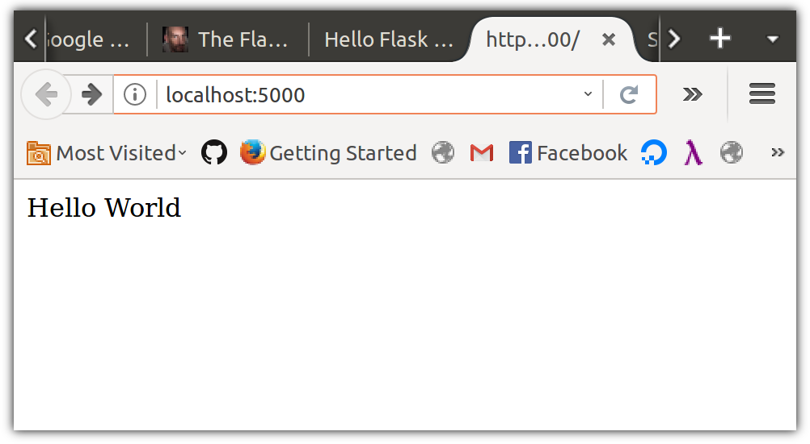
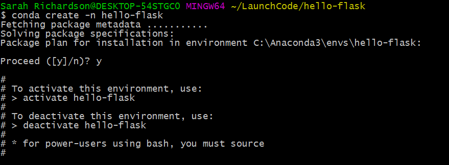
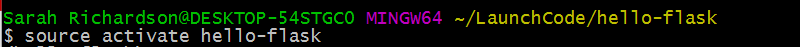
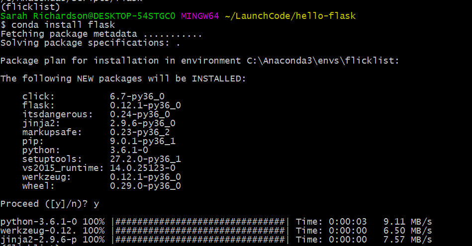
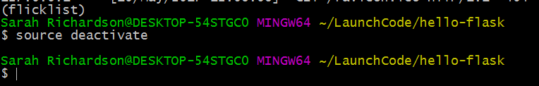

Hello Flask
Build a Development Web Application
In this tutorial, we'll configure and build a web application. The configuration will be the hard part. When we're done, we'll be able to visit the server in our browser, and it will display this heartening message:

Founding your project and installing software
Navigate to your lc101 directory, make a directory for your project, and cd (change directory) into it:
$ mkdir hello-flask
$ cd hello-flaskTo download the flask library, we're going to need a way to store libraries. So that this doesn't cause version mismatch issues with other versions of Python on your system - including system libraries which might be using Python - we'll install a virtual environment and host all our libraries within it.
To create a virtual environment with Conda, we'll do the following:
- In your
hello-flask/directory, create a virtual environment namedhello-flasklike so:conda create -n hello-flask

- Activate the virtual environment using
source activate hello-flask

- Install flask into your virtual environment with the command
conda install flask

Tip: If you need to deactivate the virtual environment, use the command source deactivate.

Now we're ready to build our web application!
Building a web application line by line
First, let's initialize this project as a Git repository.
$ git initFrom your ~/lc101/hello-flask/ directory, create a new file named main.py and then open up the project in Visual Studio Code.
$ touch main.py
$ code .Open main.py in the code editor. Then type this in, considering each line as you do:
from flask import Flask
app = Flask(__name__)
app.config['DEBUG'] = True
@app.route("/")
def index():
return "Hello World"
app.run()
What's all this do?
from flask import Flask: this imports theFlaskclass from theflaskmodule.app = Flask(__name__): app will be the object created by the constructorFlask.__name__is a variable controlled by Python that tells code what module it's in.app.config['DEBUG'] = True: theDEBUGconfiguration setting for the Flask application will be enabled. This enables some behaviors that are helpful when developing Flask apps, such as displaying errors in the browser, and ensuring file changes are reloaded while the server is running (aka "host swapping")@app.route("/"): this is a decorator that creates a mapping between the path - in this case the root, or "/", and the function that we're about to definedef index():: Ah, familiar ground! We defineindex, a function of zero variablesreturn "Hello World": Our function returns a string literal.app.run(): Pass control to the Flask object. The run function loops forever and never returns, so put it last. It carries out the responsibilities of a web server, listening for requests and sending responses over a network connection.
Here goes. Go to your terminal and start things up. The output should look like:
$ python main.py
* Running on http://127.0.0.1:5000/ (Press CTRL+C to quit)From the computer running this process, point your browser at http://localhost:5000/ and see what's up. Maybe this?!
If so: congrats! You've built a dynamic web app!
Go back to the terminal and note that there's an extra line now:
$ python main.py
* Running on http://127.0.0.1:5000/ (Press CTRL+C to quit)
127.0.0.1 - - [10/Apr/2017 17:02:19] "GET / HTTP/1.1" 200 -The HTTP request you made to the Flask application server has been logged. In particular, notice the request line, GET / HTTP/1.1, and response code of 200. Neat, huh?
To stop the application, do as suggested in the terminal output and press CTRL+C
Committing Our File
Let's wrap up by putting our file in the local Git repository. If you run git status you'll see that we have a directory that was created by Visual Studio Code.
$ git status
On branch master
Initial commit
Untracked files:
(use "git add <file>..." to include in what will be committed)
.vscode/
main.py
nothing added to commit but untracked files present (use "git add" to track)We don't want to put this in our repository, so let's create a .gitignore file so we can, well, tell Git to ignore it.
$ touch .gitignoreBack in VS Code, add this line to .gitignore:
.vscode/Then run git status again to see what's changed.
$ git status
On branch master
Initial commit
Untracked files:
(use "git add <file>..." to include in what will be committed)
.gitignore
main.py
nothing added to commit but untracked files present (use "git add" to track)Great! Now, add and commit the files.
$ git add .
$ git commit -m "Create Hello World app"
[master (root-commit) 05bc1ae] Create Hello World app
2 files changed, 10 insertions(+)
create mode 100644 .gitignore
create mode 100644 main.pyCommon Errors
Virtual environment not activated
If you see this error:
Traceback (most recent call last):
File "main.py", line 1, in <module>
from flask import Flask
ImportError: No module named flaskThis means your virtual environment was not activated. Enter this command to start it: source activate hello-flask and then try again.
Trying to run the app from the wrong directory
If you see this error:
$ python main.py
python: can't open file 'main.py': [Errno 2] No such file or directoryThen your working directory is something other than where you put the main.py file (which is most likely ~/lc101/hello-flask/). Use pwd to figure out where you are, and adjust accordingly.